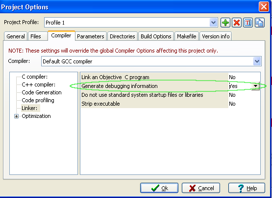
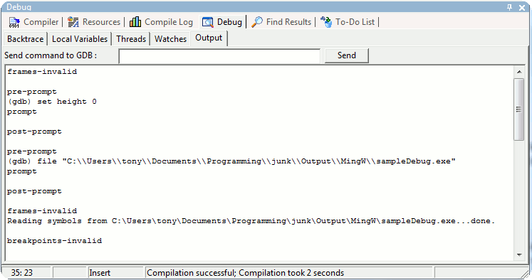

Launching your program into the debugger is easy.
Just go to the Debug menu and click on Debug (
shortcut : F8).
If
you do not have debugging information set in your project, wxDev-C++
will
ask you if you want to rebuild your program with this information
enabled. You can manually select that option in Compiler
Option in the
Linker
section.

Note
that the executable size has grown because the compiler has added
additional information that the debugger accesses during runtime. After
your project has been rebuilt with the debugger information included,
you can click
Debug again.
The debugger has now loaded your program and runs it.

What happened? Well, as the Debugger
Output
window shows above, wxDev-C++ started gdb and ran your executable
called "sampleDebug.exe". The program had no errors and no
breakpoints and so it exited normally. Since the program exited
normally, this
output is probably only interesting if you are familiar with gdb.
You
can also send commands directly to the debugger by using the "Send
command to GDB" edit box just
above the output. If you do not know gdb, you can
type help to
display a list of commands. Remember that wxDev-C++ is really just
running a shell that passes these commands to the debugger and reads
the output returned. You could re-create the same commands by using gdb
from within a DOS shell.
In the next sections, we'll cover
several useful (and more interesting) aspects of the debugger :